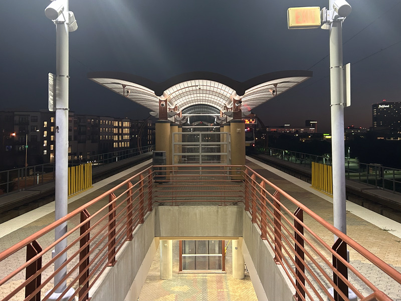

🚆 Is DART's New Transit Line Enough to Save It? (Part 2: Execution)
The Silver Line
DART’s new Silver Line crossing Central. (image credit)
In my first article in this series, I wrote about how DART’s well-intentioned but poorly timed bet on park-and-ride led to system-level inefficiencies. But there’s good news! The Silver Line fixes a ton of DART’s existing issues - let’s see how on a map of the line.

DART Silver Line’s right-of-way.
Previous DART lines had lots of stations at regular intervals - more like beefed-up bus lines. Compare that to the Silver Line, where stations are fewer and further between. This means higher speeds and faster travel times. The Silver Line also has a much tighter focus on stations in high-density areas and points of interest. Here are a few examples:
- DFW, The nation’s busiest airport. Highways get so gridlocked here, some travelers hop out and walk along the highway median to their gates!
- UT Dallas, Dallas' largest university (and self-proclaimed “MIT of the South”)
- Four High-Density mixed-use developments: Addison Center, CityLine, Plano (12th street), and Carrollton 1
- One major shopping center (Knoll Trail)
So far, so good. But I couldn’t just write about the Silver line. I had to ride it for myself! This Thanksgiving I decided to spend the week using DART as much as possible to see if it’s truly a game-changer.

Traffic at DFW airport during the holidays. (image credit)
DART to the Airport
The Silver Line has an excellent connection to Dallas' airport. Well, Dallas' bigger airport, DFW. Unfortunately, my (rapidly evaporating) loyalty to Southwest Airlines demands that I fly into Dallas' smaller airfield, Love Field. I normally prefer Love Field - it’s much closer to the city, and you don’t have to pay a toll to get inside. However, flying into Love forces you to take a more… circuitous DART route. See below.
Routing from Love Field to UTD Station
My first connection was a slow bus shuttle to the DART Green line.2 The Green Line uses DART’s classic rolling stock - Kinki Sharyo S-LRVs. (The -S apparently stands for “Super”.) These trains are crazy spacious and comfortable, especially for light rail. The middle car is fully ADA compliant while cars on either end are elevated for additional seating room. There’s already an RFP out to replace these, and I’ll be sad to see them go.
DART Green Line’s Kinki Sharyo S-LRV.
Coming from San Jose’s pitiful light rail, I’m consistently surprised by how solid DART’s infrastructure is. Nearly the whole Green Line is elevated, and trains can reach 65 mph on straightaways. DART’s Green Line stations also feature early-2000s architectural aesthetic we all know and love. The friendly swoops and creases add some whimsy to an otherwise boring station. On the other hand, the Silver Line stations are all sharp angles and bright lights. Certainly more modern, but certain features like the diffused glass / LED combo probably won’t age well.
|  |  |
|---|---|
| Carrollton Green Line station | Carrollton Silver Line station |
But enough on form - what about function? The Silver Line runs less frequently than DART, giving me a long, 20 minute transfer. Maybe DART hasn’t worked out the kinks in the transfer schedule yet. Once onboard, you’ll notice that the trains are really quiet! The Silver Line’s trains are diesel-powered,3 but are hardly louder than a washing machine (to my ears, anyway). They’re also fast - the Stadler FLIRT locomotives covered the ~15 miles from Carrollton to UTD in just 18 min. We have higher train speeds and fewer stops to thank for that.
DART Silver Line’s Stadler FLIRT pulling out of UTD station
As a DFW airport connection, the Silver Line is invaluable. During rush hour or holiday traffic, it’s cheaper and likely faster than an Uber. But if you’re flying into Love field, I probably wouldn’t waste time with DART. My 20 minute drive home transformed into a 2.5 hour, three-transfer adventure. But what about DART’s primary purpose - commuting?
Commuting on DART
For my second test, I wanted to see if the Silver Line could cut time off of my commute. My office has a great connection to the Red Line, so it was a single transfer from my home base of UTD station. DART was originally built for commuting, so I was optimistic!
A typical station on the Red Line
I would call my commute on DART a success. End-to-end, my drive to work is normally 20 minutes. Taking DART only grew this to 30 min, and I was able to read the whole time. Trains were clean and on-time, both for the Silver and Red Lines. While I had a good commuting experience, your mileage may vary. For starters, I’m blessed with a DART station relatively close to my house. This is rare for reasons mentioned earlier (i.e. park-and-ride). Also, I organically like commuting on the train. But DART still has strides to make in public safety and cleanliness to lure disinterested commuters out of their cars.
Most of these early stations had easter eggs hidden in plain sight! This station is near the headquarters of a major microchip manufacturer - hence the circuit board decorations.
Will the Silver Line Save DART?
Regardless, the Silver Line is a massive leap forward for DART. It marks a welcome change from the outdated Park-and-Ride model, which purposefully placed stations far from population centers. The Silver Line correctly focus stations in areas where driving is inconvenient and expensive. It even expands DART’s reach, making the Red and Green lines more useful too. One question still stands - is it enough?
There are stormclouds on the horizon. DART is funded by Dallas' suburbs, each of which have a 1% sales tax that goes straight to transit. Suburbs vote whether to remain in DART every six years, and the next election is coming up. So if you’re a cash-strapped suburb, now is the time to raise funding equity concerns and consider leaving DART altogether. With the inefficiencies in the current system, I don’t completely blame them.
This is why the Silver Line is so crucial - it proves that DART isn’t stuck in the past. I hope that as the Silver Line ridership grows, these suburbs will change their tune and see the value DART brings to their communities. Because a more connected DFW is one worth fighting for.4
-
Texas’s recently passed Senate Bill 840 also makes it easier to build multi-family housing, especially in commercially-zoned areas near DART lines. ↩︎
-
This was originally planned as a direct rail connection, but would later be blocked by the Federal Government. ↩︎
-
The Silver Line right-of-way is still shared with an active freight railway making electrification was a non-starter. ↩︎
-
Semi-related to this article: I found a relic of the old internet. A time-capsule 2000’s era website maintained by a light rail mega-fan. Check it out here: ↩︎